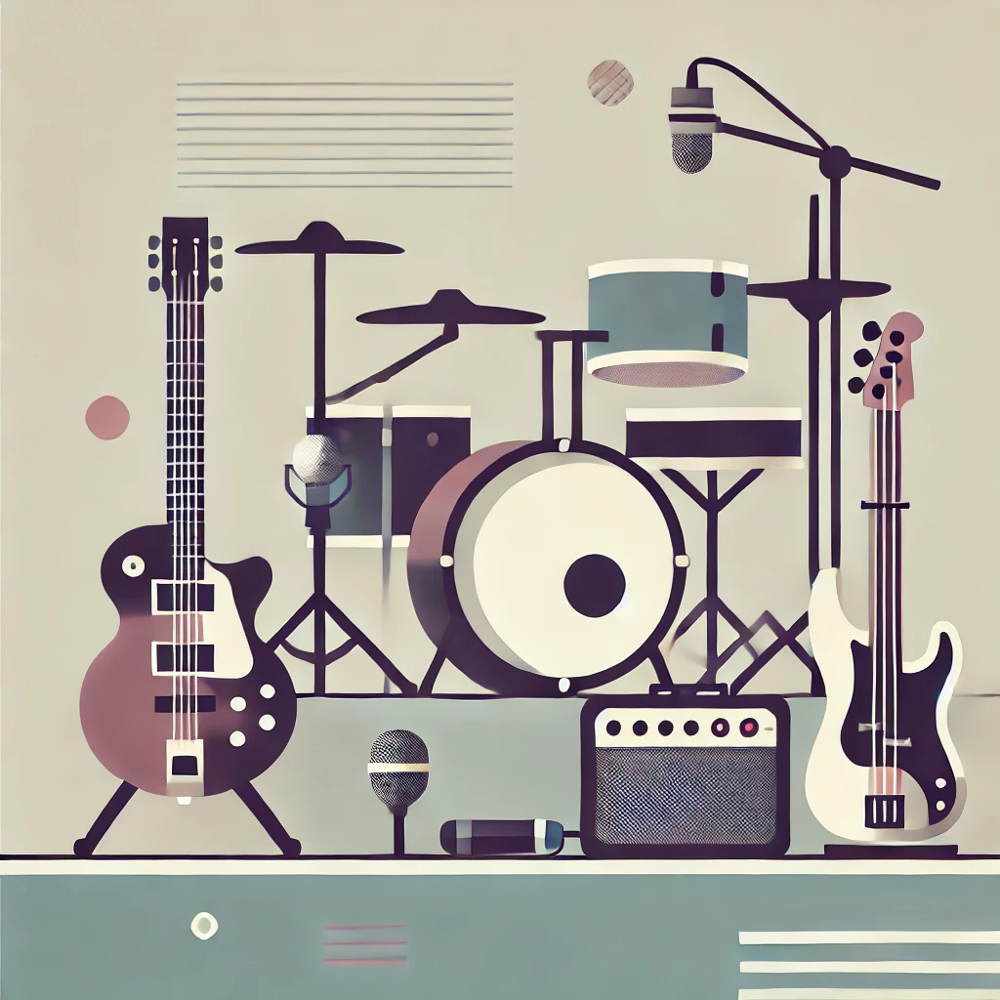

Shop Our Collection

Classic Rock
From The Rolling Stones to Led Zeppelin, explore our classic rock collection.
Jazz Essentials
Discover timeless jazz from legends like Miles Davis and John Coltrane.

Indie Favorites
From underground gems to indie chart-toppers, find your next favorite record.